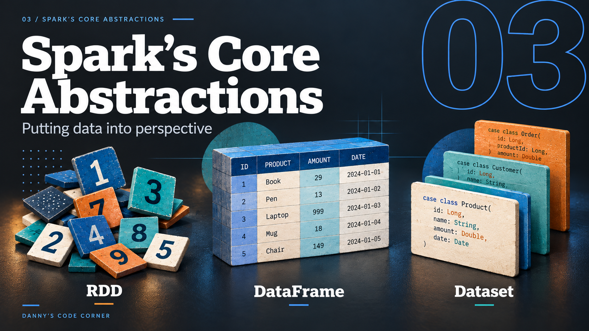

DCC / SPARK TRAINING
A WORKSHOP
Mastering
PySpark
Big Data Analytics with PySpark
Danny Meijer


About Me — Danny Meijer
Independent data & software engineer.
20 years of experience in Software engineering, Data Engineering and Cloud.
Large-scale data platforms
Previously Principal Software Engineer at Nike.
Core technologies
Spark, Databricks, Python, SQL and AWS.
Teaching PySpark
Creator of Mastering Big Data Analytics with PySpark.
Creator of Incan
A Python-readable, Rust-native programming language.
Curious. Pragmatic. Always learning.
Danny’s Code Corner
DCC / SPARK TRAINING
Agenda

01 / SPARK VS. PYTHON

The distributed engine

The language you write
How do Python and Spark
work together?
01 / SPARK VS. PYTHON
Cluster Computing
Several computers working together. Each computer is a node.
01 / SPARK VS. PYTHON
A PySpark application
from pyspark.sql import SparkSession
spark = (SparkSession.builder
.appName("MyApp")
.getOrCreate())
df = spark.read.parquet("data/")
print(df.count())
01 / SPARK VS. PYTHON
How Python Interacts with Spark
Classic PySpark · application, driver and cluster
The complete pictureA classic PySpark application, its driver-side processes, and the cluster workers.
1 · Your applicationStart with a Python application that uses the PySpark API.
2 · Launchspark-submit launches the application; your code creates or obtains a SparkSession.
3 · Python and the JVMPy4J bridges separate Python and JVM processes. SparkSession is an entry point into Spark.
4 · Work on the clusterThe driver schedules tasks on executors. Built-in Spark SQL operations run in the Spark engine.
5 · Python on the workersWhen a task requires Python execution, a Python worker runs that code.
6 · The cost of crossing processesPython workers use CPU and memory; data exchange involves serialization and conversion.
7 · Results back to the driverExecutors report results and status. The driver handles task completion and the requested result.
8 · Back in PythonFor this count(), Python receives a number. print() runs in your Python process.
Step 8 of 8
01 / SPARK VS. PYTHON
Spark Applications
Independent sets of processes, coordinated by a driver.
One application, several processesA driver coordinates its own executors. Worker nodes and the cluster manager are shared infrastructure.
1 · The driverYour application creates a SparkSession. The driver coordinates the work for this application.
2 · Request resourcesThe cluster manager allocates resources so executor processes can be launched.
3 · An application’s own executorsEach application gets its own executors. A worker node can host processes from different applications.
4 · Run tasksThe driver schedules tasks directly on executors; the cluster manager does not schedule these tasks.
5 · Keep data for reuseExecutors can cache data in memory or on disk. Caching is optional—not a copy of every input.
6 · Exchange dataSome operations need data from other partitions. Shuffle transfers that data between executors.
7 · Report backExecutors return task results and status to the driver. Bulk shuffle data takes a different route.
Step 7 of 7

02 / INTRODUCING SPARK
A Brief
History of
Spark
From research ideas to
an open-source data engine.
2003 — 20262003 / 04The foundations
2009Spark begins
2013Apache
2026Spark 4.x
02 / INTRODUCING SPARK
2003/04Google’s papers
2006Hadoop
2009Spark begins
2010Open source
2013Apache
2014Spark 1.0
2015DataFrames
2016Spark 2.0
2020/21Spark 3.x
2023Connect
2025Spark 4.0
2026Spark 4.2
01 / 12Distributed storage and computation
Google’s papers
Google File System describes distributed storage; MapReduce describes processing across machines. These are two different responsibilities.
Chronological milestones · spacing not to scale
02 / INTRODUCING SPARK
2003/04Google’s papers
2006Hadoop
2009Spark begins
2010Open source
2013Apache
2014Spark 1.0
2015DataFrames
2016Spark 2.0
2020/21Spark 3.x
2023Connect
2025Spark 4.0
2026Spark 4.2
02 / 12An open-source implementation
Hadoop

Hadoop brings distributed storage and MapReduce processing into an open-source project.
Chronological milestones · spacing not to scale
02 / INTRODUCING SPARK
2003/04Google’s papers
2006Hadoop
2009Spark begins
2010Open source
2013Apache
2014Spark 1.0
2015DataFrames
2016Spark 2.0
2020/21Spark 3.x
2023Connect
2025Spark 4.0
2026Spark 4.2
03 / 12UC Berkeley · AMPLab
Spark begins

UC Berkeley
AMPLab
Iterative algorithms.
Interactive analysis.
The same data, reused.
 UC Berkeley · Sather Tower
UC Berkeley · Sather Tower
Photo: Daderot, CC0 · 2013Reuse working data across computations, instead of repeatedly starting from stored output.
Chronological milestones · spacing not to scale
02 / INTRODUCING SPARK
2003/04Google’s papers
2006Hadoop
2009Spark begins
2010Open source
2013Apache
2014Spark 1.0
2015DataFrames
2016Spark 2.0
2020/21Spark 3.x
2023Connect
2025Spark 4.0
2026Spark 4.2
04 / 12From research to a shared project
Spark goes open source

HOTCLOUD ’10Cluster Computing
with Working Sets
The ideas are published.
The code is open.
Others can build on it.
Spark combines distributed execution with data reuse, including keeping working data in memory.
Chronological milestones · spacing not to scale
02 / INTRODUCING SPARK
2003/04Google’s papers
2006Hadoop
2009Spark begins
2010Open source
2013Apache
2014Spark 1.0
2015DataFrames
2016Spark 2.0
2020/21Spark 3.x
2023Connect
2025Spark 4.0
2026Spark 4.2
05 / 12The Apache Software Foundation
Spark joins Apache

2013Spark enters
the Apache Incubator.
An open project, developed by a community.
Spark moves to the Apache Software Foundation and grows beyond the original research team.
Chronological milestones · spacing not to scale
02 / INTRODUCING SPARK
2003/04Google’s papers
2006Hadoop
2009Spark begins
2010Open source
2013Apache
2014Spark 1.0
2015DataFrames
2016Spark 2.0
2020/21Spark 3.x
2023Connect
2025Spark 4.0
2026Spark 4.2
06 / 12A common engine for different workloads
Spark 1.0
Spark becomes an Apache top-level project, and version 1.0 is released.
Chronological milestones · spacing not to scale
02 / INTRODUCING SPARK
2003/04Google’s papers
2006Hadoop
2009Spark begins
2010Open source
2013Apache
2014Spark 1.0
2015DataFrames
2016Spark 2.0
2020/21Spark 3.x
2023Connect
2025Spark 4.0
2026Spark 4.2
07 / 12Spark 1.3 · 2015
DataFrames and a growing community
Named columns and schemas give Spark more information to optimize your computation.
Chronological milestones · spacing not to scale
02 / INTRODUCING SPARK
2003/04Google’s papers
2006Hadoop
2009Spark begins
2010Open source
2013Apache
2014Spark 1.0
2015DataFrames
2016Spark 2.0
2020/21Spark 3.x
2023Connect
2025Spark 4.0
2026Spark 4.2
08 / 12A common entry point
Spark 2.0
SparkSession becomes the common entry point; Structured Streaming brings streaming into the structured APIs.
Chronological milestones · spacing not to scale
02 / INTRODUCING SPARK
2003/04Google’s papers
2006Hadoop
2009Spark begins
2010Open source
2013Apache
2014Spark 1.0
2015DataFrames
2016Spark 2.0
2020/21Spark 3.x
2023Connect
2025Spark 4.0
2026Spark 4.2
09 / 122020: AQE arrives · 2021: enabled by default
Spark 3.0 and AQE
Adaptive Query Execution can revise a query’s physical plan using statistics collected during execution.
Chronological milestones · spacing not to scale
02 / INTRODUCING SPARK
2003/04Google’s papers
2006Hadoop
2009Spark begins
2010Open source
2013Apache
2014Spark 1.0
2015DataFrames
2016Spark 2.0
2020/21Spark 3.x
2023Connect
2025Spark 4.0
2026Spark 4.2
10 / 12Spark 3.4 · 2023
Spark Connect
A remote client can send a query plan to Spark. The classic local Py4J picture is no longer the only connection model.
Chronological milestones · spacing not to scale
02 / INTRODUCING SPARK
2003/04Google’s papers
2006Hadoop
2009Spark begins
2010Open source
2013Apache
2014Spark 1.0
2015DataFrames
2016Spark 2.0
2020/21Spark 3.x
2023Connect
2025Spark 4.0
2026Spark 4.2
11 / 12New APIs and new defaults
Spark 4.0
ANSI SQL mode becomes the default; Python data sources and Spark Connect gain capabilities.
Chronological milestones · spacing not to scale
02 / INTRODUCING SPARK
2003/04Google’s papers
2006Hadoop
2009Spark begins
2010Open source
2013Apache
2014Spark 1.0
2015DataFrames
2016Spark 2.0
2020/21Spark 3.x
2023Connect
2025Spark 4.0
2026Spark 4.2
12 / 12The current generation · 2026
Spark 4.2
Spark 4.2 extends SQL and data-source support, and enables Arrow-based Python execution paths by default.
Chronological milestones · spacing not to scale
02 / INTRODUCING SPARK
Spark’s Main Components
Different capabilities, shared execution engine.

03 / Spark’s Core Abstractions
Spark’s Core Abstractions
Putting data into perspective
RDD · DataFrame · Dataset
Danny’s Code Corner
03 / SPARK’S CORE ABSTRACTIONS
Hadoop and MapReduce
Store the records. Group matching keys. Compute the totals.
Hadoop and MapReduceStore the records. Group matching keys. Compute the totals.
1 · Separate storage from processingHadoop is an ecosystem. HDFS stores files; MapReduce is a processing framework.
2 · Bring matching keys togetherMap emits category–amount pairs. Shuffle and sort group records by key.
3 · Reduce each groupSum each category’s amounts, then write the job’s output.
Step 3 of 3
03 / SPARK’S CORE ABSTRACTIONS
When one job needs another
Reusing a result across jobs means writing it out and reading it back.
When one job needs anotherReusing a result across jobs means writing it out and reading it back.
1 · Finish the first jobIts output becomes a durable input for later work.
2 · Start the next calculationRead that intermediate result from storage before processing it again.
3 · Now repeat this many timesIterative and interactive workloads make the repeated I/O especially costly.
Step 3 of 3
03 / SPARK’S CORE ABSTRACTIONS
Resilient Distributed Dataset
An immutable, partitioned collection, with a record of how it was derived.
Resilient Distributed DatasetAn immutable, partitioned collection, with a record of how it was derived.
1 · DatasetA logical collection of elements. Here, the same four sales records.
2 · DistributedTransformations describe work over partitions; Spark schedules tasks to execute it.
3 · ResilientLineage records dependencies that Spark can use to recompute lost partitions.
Step 3 of 3
03 / SPARK’S CORE ABSTRACTIONS
Reuse a result. Recover a partition.
Persistence can avoid repeated work; lineage provides a route to recomputation.
Reuse a result. Recover a partition.Persistence can avoid repeated work; lineage provides a route to recomputation.
1 · Reuse an intermediate RDDAfter an action computes it, persisted partitions can serve later calculations.
2 · Lose one stored partitionKeeping data in memory does not make failures disappear.
3 · Recompute the missing partitionFor this narrow filter, source partition P0 is enough to rebuild filtered P0.
Step 3 of 3
03 / SPARK’S CORE ABSTRACTIONS
But why is this important?
Take a moment. What does this help us understand about Spark?
But why is this important?Take a moment. What does this help us understand about Spark?
1 · Parallel workPartitions help explain how Spark divides a computation into tasks.
2 · Required workDependencies explain the work a result depends on.
3 · Repeated workRecovery explains why some work may run again after data is lost.
Step 3 of 3
03 / SPARK’S CORE ABSTRACTIONS
Give Spark more information
Keep the records. Add a schema and expressions Spark can understand.
Give Spark more informationKeep the records. Add a schema and expressions Spark can understand.
1 · A function over elementsSpark tracks RDD dependencies, but arbitrary Python logic is largely opaque to SQL optimisation.
2 · Name and type the columnsThe schema says which values are category and amount.
3 · Describe the operationA built-in column expression becomes part of a plan Spark can analyse and optimise.
Step 3 of 3
03 / SPARK’S CORE ABSTRACTIONS
Why use DataFrames?
Spark can use the meaning of your query to avoid unnecessary work.
Why use DataFrames?Spark can use the meaning of your query to avoid unnecessary work.
1 · Tell Spark what you needThis query only needs the amount column and values above 20.
2 · Avoid unnecessary columnsWith a suitable source such as Parquet, Spark can prune unused columns.
3 · Apply supported filters near the sourcePushdown may reduce data read or passed onward. Its effect depends on the source.
Step 3 of 3
03 / SPARK’S CORE ABSTRACTIONS
There’s also the Dataset API
SCALA / JAVA
Dataset<Sale>
Sale("books", 25)A typed object API.
Unified since Spark 2.0
Scala: DataFrame = Dataset[Row]
OUR PYSPARK COURSE
DataFrame
No typed Dataset API to learn here.
Recognise the term in documentation. We’ll work with DataFrames.
Earlier explanations and comparison slides ↗
03 / SPARK’S CORE ABSTRACTIONS
Three ways to represent data
The same four sales records, through three different APIs.
Same records, different interfacesWatch what changes when we add structure to the same data.
1 · Start with ordinary elementsAn RDD can hold Python tuples. Your functions work with those elements.
2 · Give the columns names and typesA DataFrame exposes a schema and expressions that Spark can analyse and optimise.
3 · Typed objects with DatasetA Dataset represents records as typed objects through the Scala and Java APIs.
Step 3 of 3
03 / SPARK’S CORE ABSTRACTIONS
A DataFrame is still distributed
A familiar table does not mean all the rows live in Python.
One table, multiple partitionsThe table is our logical view; executors process its partitions.
1 · The table we work withsales refers to a DataFrame. The Python variable does not hold every row locally.
2 · Look beneath that tableAt execution time, tasks process subsets of rows on executors.
3 · Describe an operation onceSpark schedules the partition-level work. We do not write a loop over machines.
Step 3 of 3
03 / SPARK’S CORE ABSTRACTIONS
Spark’s Data APIs
Three interfaces to distributed data
RDDElements + functionsYou describe operations on individual elements.
DataFrameRows + schema + expressionsSpark can reason about columns and the query.
Dataset[T]Typed objects + Spark SQLScala and Java add a typed object interface.
For this course, we will mainly work with DataFrames.
03 / SPARK’S CORE ABSTRACTIONS
Resilient Distributed Dataset API
RDDs and partitionsA collection is split into partitions; tasks can process different partitions in parallel.
1 · DatasetA collection of elements — here, Python tuples.
2 · DistributedDifferent tasks can work on different partitions in parallel.
3 · ResilientSpark tracks how partitions were derived, so lost data can be recomputed.
Step 3 of 3
03 / SPARK’S CORE ABSTRACTIONS
Dataset API
Typed objects with Spark SQL’s execution engine
SCALA EXAMPLEcase class Sale(category: String,
amount: Long)
val sales: Dataset[Sale]
Each element is exposed as a Sale.
Objects at the API boundary
Encoders map typed objects to Spark SQL’s internal representation.
Types checked by the compiler
Available in Scala and Java.
Python uses the DataFrame API.
In Scala, DataFrame is an alias for Dataset[Row].
03 / SPARK’S CORE ABSTRACTIONS
DataFrame API
Distributed rows, organised into named columns
| category | amount |
|---|
| books | 25 |
| games | 40 |
| books | 15 |
| music | 10 |
A logical table view — no guaranteed row order.
The schema gives data meaning
categorystring
amountlong
Column names, types and expressions give Spark information it can use to optimise the query.
sales.select("category", "amount")
SQL and the DataFrame API use the same Spark SQL engine.
03 / SPARK’S CORE ABSTRACTIONS
A DataFrame is distributed
A DataFrame is distributedThe Python reference is local; the data is processed in partitions by Spark.
1 · A local referencesales is a Python reference to a DataFrame, not a local container holding every row.
2 · A distributed computationSpark plans the work and schedules tasks on executors.
3 · Rows in partitionsEach partition holds a subset of rows. An executor can process many partitions.
Step 3 of 3
03 / SPARK’S CORE ABSTRACTIONS
Immutability
THE ORIGINAL DATAFRAME DOES NOT CHANGEA transformation describes
a new DataFrame.
sales = spark.read.parquet("data/sales/")
amounts = sales.select("amount")
sales still describes both columns.
amounts describes the selected column.
A new DataFrame does not mean Spark has copied all the data.
03 / SPARK’S CORE ABSTRACTIONS
df = df.select(…)
Rebinding a Python nameThe right-hand side creates a new DataFrame; assignment changes what df refers to.
1 · Start with dfBefore this statement, df refers to the original DataFrame A.
2 · Evaluate the right-hand sidedf.select("amount") returns a new DataFrame B, derived from A.
3 · Assign the resultThe name df now refers to B. A was not modified, and no full data copy is implied.
Step 3 of 3
04 / LAZY PANDAS
04Lazy Pandas …
Pandas? … Lazy? …
04 / LAZY PANDAS
Spark is Lazy
Pandas vs. Spark DataFrames
- 01Pandas and Spark operations side by side
- 02Eager versus lazy computation
- 03Transformations describe work; actions request results
- 04Immutable branches and repeated requests
- 05When errors appear—and when work is repeated
CONTENT SKELETON
04 / LAZY PANDAS
Transformations and Actions
result = (events
.filter(col("amount") > 0)
.groupBy("category")
.count()
)
result.show() # action
Here, groupBy().count() builds an aggregate. show() is the action.
05 / SPARK EXECUTION MODEL
05Spark Execution
Model
Query planning and distributed execution
05 / SPARK EXECUTION MODEL
Spark Execution Model
Logical plans, physical plans and execution
- 01Logical planning, physical planning and code generation
- 02Partitions, jobs, stages and tasks
- 03Shuffles, joins and the cost of moving data
- 04Skew and adaptive query execution
- 05Repeated actions, caching and recovery
- 06Explain output and evidence in the Spark UI
CONTENT SKELETON
05 / SPARK EXECUTION MODEL
The Spark UI
Query plans, stages and tasks
- 01Read the initial plan for the recurring example
- 02Follow its tasks and shuffle boundaries
- 03Compare initial and executed plans with AQE
- 04Investigate skew, retries and repeated work
- 05Decide what to change from the evidence
CONTENT SKELETON
06 / BATCH VS. STREAMING
06Batch vs. Streaming
Spark Structured Streaming
06 / BATCH VS. STREAMING
Spark Structured Streaming
- 01Bounded data versus ongoing input
- 02Structured Streaming and micro-batches
- 03Sources, sinks and query progress
- 04Stateless and stateful computation
- 05Event time, windows and watermarks
CONTENT SKELETON
06 / BATCH VS. STREAMING
Managing Streaming Queries
- 01Output modes and supported operations
- 02Checkpointing, recovery and retries
- 03End-to-end guarantees and idempotent effects
- 04Backlog, state growth and query changes
- 05Batch and streaming side by side
CONTENT SKELETON
07 / WORKING WITH PYSPARK
07Working with
PySpark
Data preparation, deployment and AWS Glue
07 / WORKING WITH PYSPARK
Data Preparation with Spark SQL
- 01Read, define schemas and explore the input
- 02Clean types, timestamps, nulls and nested data
- 03Join without losing track of correctness
- 04Aggregate and use window functions
- 05Write, control file layout and validate the result
CONTENT SKELETON
07 / WORKING WITH PYSPARK
Spark Connect
Classic PySpark and the client–server architecture
- 01The classic PySpark process model
- 02The Spark Connect client/server boundary
- 03What crosses the connection
- 04API support, limitations and version compatibility
CONTENT SKELETON
07 / WORKING WITH PYSPARK
Running Spark in Production
- 01Launching an application and placing the driver
- 02Packaging Python and other dependencies
- 03Remote execution interfaces and configuration
- 04Monitoring, diagnosis and scaling decisions
- 05Reruns, reliable output and deployment environments
- 06Mapping those decisions to Glue
CONTENT SKELETON
07 / WORKING WITH PYSPARK
Spark in AWS Glue
- 01Glue jobs, workers and the driver/executor model
- 02Glue runtime versions versus local Spark
- 03GlueContext, DynamicFrames and DataFrames
- 04Catalogs, connectors and data access
- 05AQE versus resource scaling; progress and monitoring
- 06Streaming, checkpoints, bookmarks and recovery
CONTENT SKELETON
07 / WORKING WITH PYSPARK
Recap and Questions
01Where does this code execute?
02What work causes data to move?
03What evidence explains the behaviour?
Discussion · recap · next steps